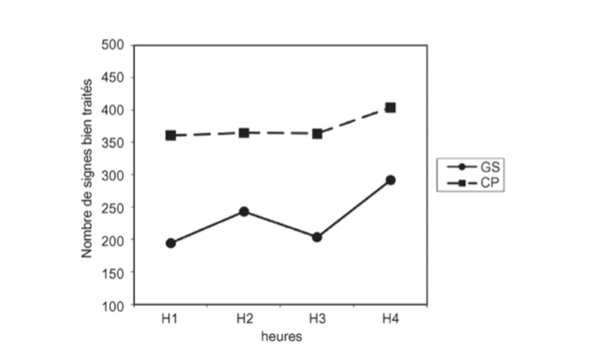

Objectif
Analyser une situation de recherche en mobilisant l’épistémologie, l’éthique scientifique et le lien recherche-pratique.
BP23REC · Méthodes et techniques de recherche
Étude de cas, correction immédiate et notions du cours débloquées progressivement.
Cours #2 et #7
Cette application te permet de travailler l’étude de cas comme à l’examen : lecture de l’énoncé, réponse question par question, correction immédiate, puis lien avec les notions du cours.
Analyser une situation de recherche en mobilisant l’épistémologie, l’éthique scientifique et le lien recherche-pratique.
Une question par écran, avec correction immédiate : réponse correcte, pourquoi, notion à retenir et lien avec le cours.
Les réponses et les notions débloquées sont sauvegardées sur ton appareil.
Étude de cas
L’énoncé est présenté de manière fidèle au PDF pour t’entraîner au format de l’examen.

Entraînement guidé
Réponds à une question, valide, puis lis directement la correction.
Révision progressive
Les notions apparaissent au fur et à mesure des questions corrigées.
Commence les questions pour débloquer progressivement les notions du cours.
Suivi
Cette section résume ton avancement, ton score et les notions à revoir.
Les notions à retravailler apparaîtront après tes premières réponses.
Application
Réglages simples pour adapter l’usage de l’application.
Application d’entraînement construite pour travailler le module BP23REC à partir d’études de cas et de corrections guidées.